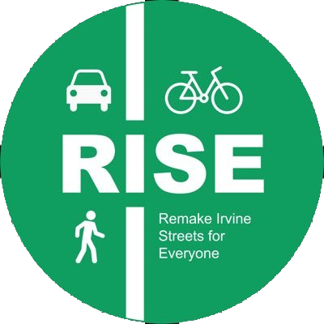

Campus Protected Bike Lanes
Similar to Yale, the city is doing outreach for protected bike lanes along Campus Drive next to UCI. RISE fully supports this project, and we hope to see approval soon.

The city is doing community engagement on a plan to add class IV protected bike lanes along Yale and Yale Loop. However, there has been pushback on the Yale Loop portion, and the city is considering dropping that portion. RISE is fighting to ensure the full project is realize. Read about the city's plan here
Similar to Yale, the city is doing outreach for protected bike lanes along Campus Drive next to UCI. RISE fully supports this project, and we hope to see approval soon.
In 2024, we got Irvine to launch its first frequent bus route under the banner of Irvine Connect. The Yale-Barranca route runs every 20 minutes all 7 days of the week. In 2025, the city approved an expansion to Northwood. The council also approved several new lines but has not funded them yet. RISE is fighting to make these and more a reality.
We successfully pushed for Irvine to negotiate a landswap with Five Point to acquire the land directly north of Irvine Station in hopes of a future downtown there. In late 2026, staff presented a concept for a walkable, mixed-use downtown next to the station, and RISE is advocating for the council to approve it.
Metrolink started an ambitious program to expand all day service in 2025 but cut back some of its service in 2026 due to maintenance issues. Then OCTA and LA Metro further cut funding to Metrolink, which would have led to a 40% reduction in service. A state bailout temporarily averted the cuts, but this is temporary. RISE supports governance reform and a dedicated funding stream to ensure that Metrolink becomes a great regional rail service.